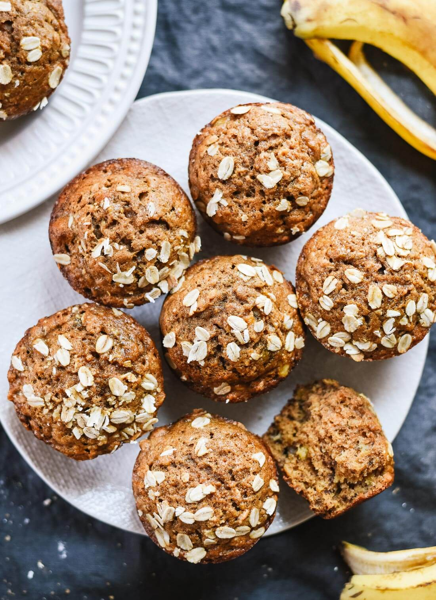

Banana Muffins Recipe

These are some very healthy banana muffins!
They’re fluffy, whole grain, naturally sweetened, totally delicious banana muffins. They’re also about as healthy as muffins can be.
Ingredients
- 1/3 cup Melted coconut oil or extra-virgin olive oil
- 1/2 cup Maple Syrup or Honey
- 2 Eggs, preferably at room temperature
- 3 Frozen ripe bananas
- 1/4 cup Milk of choice
- 1 teaspoon Baking Soda
- 1 teaspon Vanilla Extract
- 1/2 teaspon Salt
- 1/2 teaspon Cinnamon
- 1 3/4 cups Flour
- 1/3 Old-fashioned Oats (optional)
- 1 teaspon Sugar
Steps
- Preheat the oven to 325 degrees Fahrenheit (165 degrees Celsius). If necessary, grease all 12 cups of your muffin tin with butter or non-stick cooking spray (my pan is non-stick and didn’t require any grease).
- In a large bowl, beat the coconut oil and maple syrup together with a whisk. Add the eggs and beat well. Mix in the mashed bananas and milk, followed by the baking soda, vanilla extract, salt and cinnamon.
- Add the flour and oats to the bowl and mix with a large spoon, just until combined. If you’d like to add any additional mix-ins**, like nuts, chocolate or dried fruit, fold them in now.
- Divide the batter evenly between the muffin cups, filling each cup about two-thirds full. Sprinkle the tops of the muffins with a small amount of oats (about 1 tablespoon in total), followed by a light sprinkling of sugar (about 1 teaspoon in total). Bake muffins for 22 to 25 minutes, or until a toothpick inserted into a muffin comes out clean.
- Place the muffin tin on a cooling rack to cool. You might need to run a butter knife along the outer edge of the muffins to loosen them from the pan. These muffins will keep at room temperature for up to 2 days, or in the refrigerator for up to 4 days. They keep well in the freezer in a freezer-safe bag for up to 3 months (just defrost individual muffins as needed).
Home